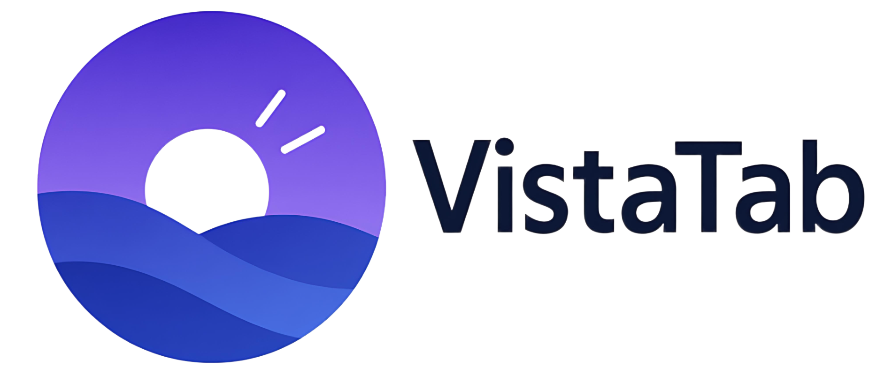

页面设置
×
搜索引擎
默认搜索引擎
Bing
Bing
Google
百度
DuckDuckGo
搜狗
Ecosia
Qwant
Startpage
Bing
Google
百度
DuckDuckGo
搜狗
Ecosia
Qwant
Startpage
搜索自动补全
主题设置
浅色
深色
蓝色
绿色
常用网站
显示行数
2行
1
2
3
4
1
2
3
4
数据管理
导出常用网站
将常用网站信息导出为JSON文件，方便备份和迁移
导出
导入常用网站
从JSON文件导入常用网站信息，会替换当前的网站列表
导入
图标管理
刷新所有网站图标
如果网站图标显示不正常，点击刷新按钮重新获取所有图标
刷新
添加网站
×
网站名称
网站地址
编辑网站
×
网站名称
网站地址
确认删除
×
确定要删除
吗？
此操作无法撤销